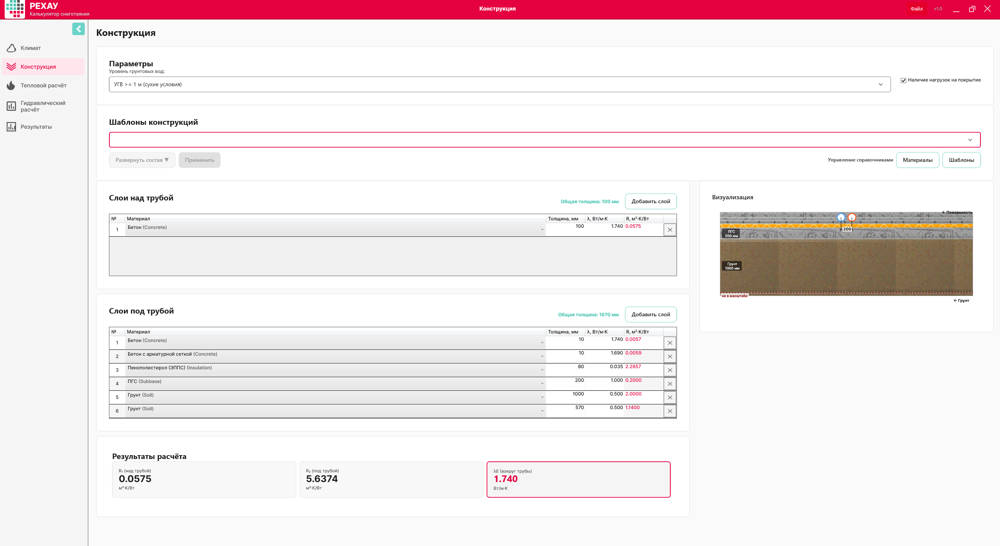
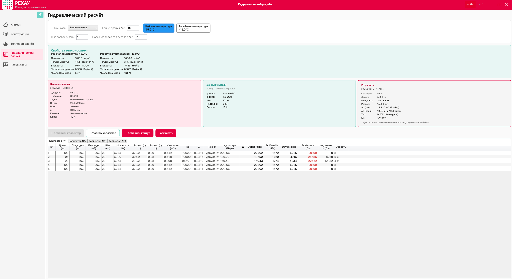
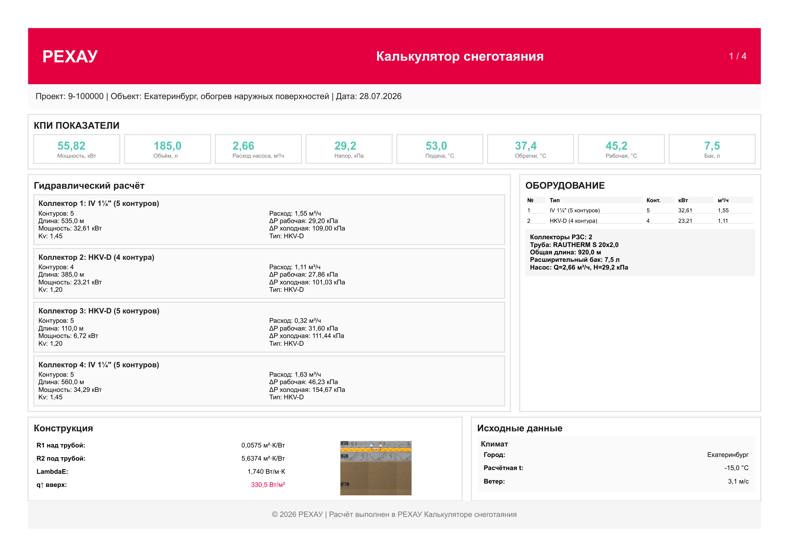
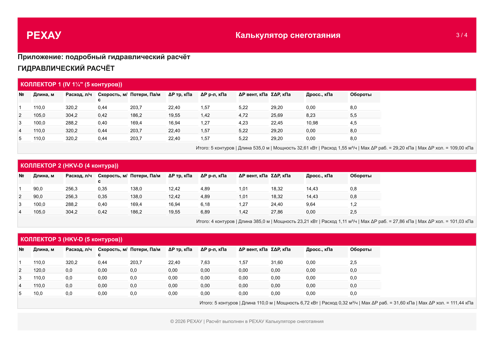

Версия документа: 2.3 (kimi)
Дата редакции: 28.07.2026
Статус: Актуальная
Пример расчёта: Екатеринбург, обогрев наружных поверхностей (проект № 9-100000, файл Екат.smc), 370 м²
Документ построен как сквозной пример: от ввода климата до экспорта PDF-отчёта на реальном объекте. Каждый шаг имеет единую структуру:
| Блок | Назначение |
|---|---|
| Что видит пользователь | Описание экрана и элементов управления |
| ▶️ Действия пользователя | Пошаговая инструкция «что нажать и что ввести» |
| 🤖 Что рассчиталось автоматически | Прозрачная математика ядра — для проверки корректности |
| 🔍 Валидации | Системные ограничения, зашитые в код программы |
| 🧭 Навигация | Переход к следующему шагу |
Условные обозначения в тексте:
ℹ️ Примечание — полезный контекст, можно пропустить при первом чтении.
⚠️ Предупреждение — программа посчитает, но ответственность на инженере.
❌ Критично — требует обязательного инженерного решения.
✏️ Как изменить вручную — способы переопределить автоматику.
Перед запуском программы подготовьте следующие данные — это сократит время расчёта до 10–15 минут:
Краткий маршрут без формул — для тех, кому нужен результат прямо сейчас. Детали и математика — в соответствующих главах.
| Шаг | Что сделать | Результат в примере |
|---|---|---|
| 1 | Введите город, проверьте автозаполнение, задайте снегопад | Екатеринбург, T_воздуха −15 °C, снегопад 0.5 мм/ч |
| 2 | Соберите пирог: 1 слой над трубой, 6 слоёв под трубой, УГВ 2.0 м | R1 = 0.0575, R2 = 5.6374 м²·К/Вт |
| 3 | Режим «Таяние», труба RAUTHERM S 20×2.0, шаг 200 мм → «Рассчитать» → примите рекомендацию T_подачи | q_Total = 335.4 Вт/м², график 53/37.4 °C |
| 4 | Этиленгликоль 40 %, настройте 4 коллектора и 19 контуров → «Рассчитать» | Расход 5.92 м³/ч, Δp_раб 279–462 мбар |
| 5 | Переключите на «Расчётная температура», оцените холодный пуск, экспортируйте PDF | Насос ≥ 15.5 м вод. ст., отчёт готов |
Объект: Екатеринбург, обогрев наружных поверхностей (проект № 9-100000) Обогреваемая площадь: 370 м² (19 контуров на 4 коллекторах, зона с нагрузками) Цель: снеготаяние поверхности
| Что | Значение | Почему |
|---|---|---|
| Город | Екатеринбург (Свердловская область) | Для климатических параметров (T5Days092, ветер, влажность) |
| Интенсивность снегопада | 0.5 мм/ч (умеренный снегопад) | Снег тает на поверхности |
| Температура поверхности (режим) | +5 °C (Таяние) | Стандартный режим для активного снеготаяния |
| Пирог конструкции | Бетон 100 мм + ЭППС 80 мм + основание из ПГС и грунта | Монолитная конструкция с мощным утеплением и массивным основанием |
| Уровень грунтовых вод | 2.0 м (сухие условия) | Влияет на теплопроводность нижних слоёв (λА) |
| Труба | RAUTHERM S 20×2.0, шаг 200 мм | При шаге 200 мм общая длина трубы 1850 м (контуры) + 190 м (подводки) = 2040 м |
| Теплоноситель | Этиленгликоль 40 об.% — выбирается на Шаге 4 | Морозостойкость для уральского климата |
ℹ️ Климат Екатеринбурга: Холодная пятидневка −30 °C переводит объект в климатическую зону Zone_M15 с расчётной температурой −15 °C, а средний ветер 3.1 м/с заметно усиливает конвективные потери с поверхности. Итоговая удельная мощность системы — 335.4 Вт/м².
Поле поиска города, под ним поля: T_воздуха, скорость ветра, влажность, интенсивность снегопада, флаг «Повышенные требования», кнопка «Сбросить к данным города».
data/climate_db.json)| Поле | Значение | Откуда |
|---|---|---|
| T_холодной пятидневки (T5Days092) | −30 °C | СП 131.13330.2025 |
| Расчётная температура T_воздуха | −15 °C | −37 < T5Days092 < −27 → колонка −15 °C (таблица 1.6) |
| Скорость ветра | 3.1 м/с | wind_avg_t_le_8 |
| Влажность | 72 % | humidity_15h_cold |
| Климатическая зона | Zone_M15 | Авто |
Логика автовыбора расчётной температуры (таблица 1.6, СП 131.13330.2025):
| T5Days092 (хол. пятидневка) | Расчётная T_воздуха | Климатическая зона |
|---|---|---|
| ≥ −27 °C | −10 °C | Zone_M10 |
| от −37 до −27 °C | −15 °C ← наш случай (−30 °C) | Zone_M15 |
| ≤ −37 °C | −20 °C | Zone_M20 |
| Повышенные требования (флаг) | −20 °C | Zone_M20_Plus |
✏️ Как изменить вручную:
- Введите любое значение от −50 до +10 °C непосредственно в поле T_воздуха — программа использует его для расчёта, а в скобках покажет базовое значение по городу.
- Включите флаг «Повышенные требования» — T_воздуха принудительно станет −20 °C независимо от выбранного города.
- Нажмите «Сбросить к данным города» — вернётся авто-расчётное значение по таблице выше.
-20 °C, если площадка расположена на открытом продуваемом участке.3.1 м/с уже учитывает регулярные уральские ветра.0.5 мм/ч (умеренный снегопад).-20 °C (критично для ответственных объектов: вокзалы, медицинские учреждения).⚠️ Асфальт в условиях Екатеринбурга (справочно): При расчётной температуре
−15 °Cматериалы «Асфальт» и «Асфальтобетон» находятся ровно на границе допустимого (min_outdoor_temp = −15 °C), а при флаге «Повышенные требования» (−20 °C) — за ней. Автоматическая валидация этого лимита появится в следующей версии программы; в текущей версии выбор покрытия контролирует проектировщик — рекомендуем бетон или плитку (подробнее см. в Шаге 2).
Программа автоматически проверяет корректность введенных пользователем данных. Вводимые значения должны строго соответствовать константам из ValidationConstants:
-50 до +10 °C0.1 до 30 м/с20 до 100 %0 до 20 мм/ч⚠️ Что делать при ошибке валидации: Если вы ввели некорректные данные и система подсветила поля ошибкой, нажмите на кнопку «Сбросить к данным города» — это вернет все авто-расчётные значения по умолчанию.
В боковой панели слева отображаются 5 шагов настройки.
Нажмите кнопку «Далее», чтобы перейти к следующему этапу.
Конструктор слоев разделен на две основные колонки:
В правой части экрана отображается список доступных материалов, подгружаемый из базы данных data/materials_db.json. Для каждого слоя доступны поля: Материал, Толщина, λ (теплопроводность). Также на этом экране настраивается поле «Уровень грунтовых вод» и признак «Зона с нагрузками».
📏 Отсчёт пирога — от оси трубопровода: Слои «НАД трубой» откладываются от оси трубы вверх — к поверхности покрытия, слои «ПОД трубой» — от оси трубы вниз — к грунту. Поэтому заданные 100 мм бетона над трубой — это толщина именно от оси: над верхней образующей трубы Ø20 остаётся 90 мм защитного слоя, а 10 мм ниже оси (до нижней образующей) учитываются первым слоем под трубой.
Технологический контекст: на объекте арматурная сетка раскатывается по основанию, на ней раскладывается и закрепляется труба, после чего всё заливается бетоном единой операцией. В программе этот физически единый массив разделён на два расчётных слоя — «Бетон» над трубой и «Бетон с арматурной сеткой» под трубой, — потому что они по-разному участвуют в расчёте (над/под трубой) и имеют разные коэффициенты теплопроводности (λ = 1.74 и 1.69 Вт/(м·К)).

🧩 Свои материалы и шаблоны: Помимо встроенной базы
data/materials_db.jsonпрограмма позволяет:
- добавлять пользовательские материалы — задаётся название, категория и коэффициенты теплопроводности λА (сухие условия) / λБ (влажные условия); такие материалы появляются в списках выбора слоёв наравне со штатными;
- сохранять собранный пирог как шаблон — состав и толщины слоёв над и под трубой записываются под своим именем и в дальнейшем разворачиваются в один клик, что удобно для типовых конструкций.
Пользовательские материалы и шаблоны хранятся внутри файла проекта (секции
customMaterialsиcustomTemplatesв.smc) и переносятся вместе с ним.
| № | Материал | Толщина, мм | λ, Вт/(м·К) | R, м²·К/Вт |
|---|---|---|---|---|
| 1 | Бетон (id=5) | 100 | 1.74 | 0.0575 |
ℹ️ Важно для расчета: Труба замоноличивается непосредственно в бетон. Теплопроводность первого слоя над трубой (
λ = 1.74) автоматически принимается программой как значение λE в дальнейших тепловых расчетах.
| № | Материал | Толщина, мм | λА (сухие), Вт/(м·К) | R, м²·К/Вт |
|---|---|---|---|---|
| 1 | Бетон (id=5) | 10 | 1.74 | 0.0057 |
| 2 | Бетон с арматурной сеткой | 10 | 1.69 | 0.0059 |
| 3 | Пенополистирол ЭППС (id=10) | 80 | 0.035 | 2.2857 |
| 4 | ПГС (песчано-гравийная смесь) | 200 | 1.0 | 0.2000 |
| 5 | Грунт (id=2) | 1000 | 0.5 | 2.0000 |
| 6 | Грунт (id=2) | 570 | 0.5 | 1.1400 |
Общая толщина слоёв под трубой: 1870 мм. Два слоя грунта моделируют массивное основание: верхний метр промерзающего грунта и нижележащий массив.
В поле «Уровень грунтовых вод» выберите значение 2.0 м.
🌊 Влияние влажности на расчет:
- При
УГВ ≥ 1 м(как в нашем примере) условия считаются сухими. Все слои под трубой используют коэффициент λА.- Если выбрать
УГВ < 1 м, программа автоматически переключит расчет слоев под трубой на коэффициент λБ («влажные условия») — теплопотери вниз заметно возрастут.
Программа на лету вычисляет термическое сопротивление слоев по формуле R = толщина / λ:
0.100 / 1.74 = 0.0575 м²·К/Вт0.010/1.74 + 0.010/1.69 + 0.080/0.035 + 0.200/1.0 + 1.000/0.5 + 0.570/0.5 = 0.0057 + 0.0059 + 2.2857 + 0.2000 + 2.0000 + 1.1400 = 5.6374 м²·К/Втdata/materials_db.json).hasLoads = true) минимум составляет 50 мм. В нашем примере задано 100 мм — валидация пройдена с запасом.10 до 1000 мм. Слой грунта 1000 мм находится ровно на верхней границе диапазона.ℹ️ Температурные ограничения покрытия (справочно): В базе данных
materials_db.jsonдля бетона задан предел температуры подачиmax_supply_temp = 50 °C, а для материалов «Асфальт» и «Асфальтобетон» — предел наружной температурыmin_outdoor_temp = −15 °C. В текущей версии программы автоматическая валидация этих лимитов отключена — контроль появится в следующей версии. До её выхода решение принимает проектировщик: как будет показано на Шаге 3, климат Екатеринбурга потребует температуру подачи 53 °C (превышение рекомендованного для бетона предела на 3 °C), а асфальт при расчётных −15 °C находится ровно на границе допустимого. В текущем расчете применён бетон — ограничение по асфальту не актуально.
После настройки пирога покрытия на боковой панели загорится красный индикатор на Шаге 3 («Тепловой расчёт»).
Перейдите в этот раздел и нажмите кнопку «Рассчитать», чтобы обновить данные. После этого нажмите «Далее».
На экране представлены следующие элементы управления и ввода данных:
150 / 200 / 250 / 300 мм).💡 Полезная подсказка: После выполнения основного расчета под полем «T_подачи» отобразится динамическая текстовая подсказка с рекомендуемой температурой для вашей конфигурации.

10 °C (корректируйте только при наличии точных данных инженерно-геологических изысканий).data/rehau_products.json).50 °C.Программа выполняет вычисления на базе зашитых в C#-код алгоритмов. Ниже приведена прозрачная логика этих расчетов для проверки корректности.
Используется единая расчетная формула для всех типов поверхностных покрытий: α = 2.26 × (t_П − t_H)^0.33 + 2.6 × v_wind
Параметры для вычисления:
| Параметр | Значение | Источник |
|---|---|---|
| 2.26 | Коэффициент A | Константа HeatTransferCoefficientA в коде |
| 0.33 | Показатель степени B | Константа HeatTransferCoefficientB в коде |
| 2.6 | Коэффициент C (ветер) | Константа HeatTransferCoefficientC в коде |
| t_П | +5 °C | Режим «Таяние» (выбран на Шаге 3) |
| t_H | −15 °C | Шаг 1 (Екатеринбург, −37 < T5Days092 < −27 → колонка −15 °C) |
| v_wind | 3.1 м/с | Шаг 1 (wind_avg_t_le_8 из climate_db.json) |
Вычисление по шагам:
Программа вычисляет вещественную степень через Math.Pow(20, 0.33) ≈ 2.687 — итоговое значение 14.13 Вт/(м²·К).
ℹ️ Вклад ветра: Для Екатеринбурга ветровая составляющая () превышает собственно конвективную () — именно ветер формирует бо́льшую часть потерь с поверхности при той же конструкции пирога.
При интенсивности снегопада 0.5 мм/ч и плотности компактного снега расчет в модуле ThermalCalculator выглядит так:
Параметры формулы:
| Параметр | Значение | Источник |
|---|---|---|
| h (снегопад) | 0.5 мм/ч | Ввод пользователя (умеренный снегопад) |
| ρ_снега | 893 кг/м³ | Константа SnowDensity, компактный снег |
| c_льда | 2050 Дж/(кг·К) | Константа IceHeatCapacity |
| L_плавл | 334 000 Дж/кг | Константа IceMeltingHeat (334 кДж/кг) |
| c_воды | 4180 Дж/(кг·К) | Константа WaterHeatCapacity |
| t_льда | 0 °C | Температура плавления льда |
| t_H | −15 °C | Шаг 1 (Екатеринбург) |
| t_П | +5 °C | Режим «Таяние» |
Отображение в интерфейсе:
47.8 Вт/м².
Тепловой поток вверх через конвекцию ():
| Параметр | Значение | Источник |
|---|---|---|
| α | 14.13 Вт/(м²·К) | Рассчитан в п.1 |
| t_П | +5 °C | Режим «Таяние» |
| t_H | −15 °C | Шаг 1 (Екатеринбург) |
Полезная мощность вверх ():
Точная сверка с проектом: PowerUp = 330.4851 Вт/м² (сохранённое значение в Екат.smc), то есть — расчёт согласован с файлом проекта.
Лучистый тепловой поток (, справочно):
| Параметр | Значение | Источник |
|---|---|---|
| ε | 0.055 | Константа EmissionCoefficient, коэффициент излучения поверхности |
| σ | 5.77×10⁻⁸ Вт/(м²·К⁴) | Константа StefanBoltzmann |
| T_пов | 273 + t_П = 278 K | Пересчёт t_П = +5 °C в Кельвины |
Не входит в PowerUp; отображается в интерфейсе как справочный параметр (см. docs/Formulas_Snegotayanie.md).
Тепловой поток вниз через слои изоляции (): 4.9 Вт/м² Рассчитывается по полной формуле теории стержня (те же коэффициенты, что и в п. 4.1):
где K, а — см. п. 4.1.Полная требуемая мощность системы ():
ℹ️ Эффективность утепления: Благодаря R2 = 5.64 м²·К/Вт (80 мм ЭППС и массивное грунтовое основание) потери вниз составляют лишь 1.5 % от полной мощности. На объекте 370 м² это экономит около 1.7 кВт установленной мощности.
Вычисляется термическое сопротивление элемента теплопередачи RFb:
| Параметр | Значение | Источник |
|---|---|---|
| R1 | 0.0575 м²·К/Вт | Шаг 2 (0.100 / 1.74) |
| α | 14.13 Вт/(м²·К) | Рассчитан в п.1 |
(где RD ≈ R2 = 5.6374 м²·К/Вт — полное сопротивление слоёв под трубой, см. Шаг 2; принимается за адиабатическую границу, т.к. α_низ → ∞ и 1/α_низ → 0).
Вспомогательный параметр распределения температур :
| Параметр | Значение | Источник |
|---|---|---|
| 0.6 | Эмпирический коэффициент формы | Константа FormFactor, см. физический смысл ниже |
| RFb | 0.1283 м²·К/Вт | Рассчитан выше (R1 + 1/α) |
| RD | 5.6374 м²·К/Вт | Шаг 2, полное сопротивление слоёв под трубой |
| λE | 1.74 Вт/(м·К) | Шаг 2, Бетон (id=5), materials_db.json |
| d_нар | 0.020 м | Труба RAUTHERM S 20×2.0 (rehau_products.json) |
Эффективность (КПД) шага раскладки труб :
| Параметр | Значение | Источник |
|---|---|---|
| m | 9.08 м⁻¹ | Рассчитан выше (параметр затухания) |
| s | 0.200 м | Шаг укладки, задан пользователем |
Физический смысл параметров теории стержня:
ℹ️ Почему выбран шаг 200 мм: Для климата Екатеринбурга шаг
300 ммдал бы и потребовал избыточной температуры теплоносителя свыше 70 °C — это далеко за пределом, рекомендованным для бетонного греющего слоя (50 °C), и технологически неразумно. Шаг150 мм() увеличил бы расход трубы на треть без существенного выигрыша. Шаг200 мм— оптимальный баланс для Zone_M15.
Определение: (нем. Übertemperatur — избыточная/повышенная температура) — это превышение средней температуры теплоносителя в контуре над температурой наружного воздуха, необходимое для передачи требуемого теплового потока через конструкцию с учётом дискретной раскладки труб (теория стержня / Chapman-Katunich). В официальной методике РЕХАУ этот параметр также называется температурным напором системы.
Формула (из модуля ThermalCalculator.CalculateExcessTemperature):
Вспомогательные коэффициенты (все определены выше):
| Коэф. | Формула | Численное значение | Источник |
|---|---|---|---|
| п.4, КПД ребра | |||
| п.4 | |||
| K | Шаг 1 () + t_грунта | ||
| шаг 200 мм, труба RAUTHERM S () | |||
| труба 20×2.0 мм |
Расчёт:
Физический смысл: При шаге труб 200 мм и КПД ребра теплоноситель должен быть на 60.2 °C горячее окружающего воздуха (), чтобы обеспечить на поверхности мощность Вт/м². Это даёт среднюю температуру контура .
Использование в дальнейших расчётах:
Средняя температура теплоносителя в контуре ():
ℹ️ Важно: Значение T_обратки не вводится вручную. Данный параметр вычисляется программой автоматически на основании заданной температуры подачи.
На основе вычислений под полем «Температура подачи» отображается следующее информационное сообщение:
ℹ️ Рекомендуется: 53 °C (для ΔT ≈ 15 K) Логика подбора: . Программа округляет до целого — 53 °C. — целевой перепад для систем снеготаяния по методике РЕХАУ (баланс между расходом и равномерностью температурного поля).
Действие пользователя: Измените значение в поле «T_подачи» на 53 °C и повторно нажмите кнопку «Рассчитать».
В нижней части вкладки «Тепловой расчёт» отображаются показатели расхода на 1 м²:
| Параметр | Значение | Источник |
|---|---|---|
| q_total | 335.4 Вт/м² | PowerUp + q_D (п.3) |
| c_p | 3.50 кДж/(кг·К) | Этиленгликоль 40 % при +45 °C (glycol_data.json) |
| 3.6 | 3600/1000 | Перевод кДж/(кг·К)→Дж/(кг·К) → кг/ч |
| ΔT | 15.6 K | T_подачи − T_обратки для скорректированной подачи 53 °C |
> ℹ️ **Коэффициент 3.6** — переводной множитель: задана в кДж/(кг·К), а мощность — в Вт (Дж/с).
> , → . Отсюда: .
⚠️ Контроль отрицательной температуры обратной магистрали: В текущей версии ядра автопроверка падения не реализована. Для режима «Таяние» (+5 °C) этот риск отсутствует. При проектировании систем в режиме «Антиобледенение» (+3 °C) отслеживайте данный показатель вручную во избежание выпадения конденсата или обледенения (см. детальное описание рисков в
docs/Планируемые_изменения.md).
ℹ️ Температура подачи 53 °C и предел для бетона (справочно): В базе данных
materials_db.jsonдля бетона установлено рекомендованное ограничениеmax_supply_temp = 50 °C. Принятая в примере температура подачи 53 °C превышает его на 3 °C. В текущей версии программы автоматическая валидация этого лимита отключена (предупреждающий значок появится в следующей версии) — расчет выполняется без блокировок, а окончательное решение принимает проектировщик. Варианты строгого соблюдения норматива:
- снизить подачу до
50 °C(при этом упадёт до9.6 K, расход возрастёт более чем на 60 %);- уменьшить шаг укладки до
150 мм— это снизит примерно на 2–3 °C;- согласовать превышение в рамках проекта (для кратковременных режимов снеготаяния это обычная практика).
После применения скорректированной температуры подачи и пересчета на боковой панели загорится красный индикатор на Шаге 4 («Гидравлика»).
Перейдите в данный раздел. Таблица контуров обновится автоматически. Если этого не произошло, нажмите кнопку «Рассчитать», после чего нажмите «Далее».
Данный рабочий экран состоит из нескольких ключевых интерфейсных блоков:

40 % (допустимый системный диапазон ввода в ValidationConstants составляет от 10% до 90%).| Коллектор | Тип (автовыбор) | Контур | Длина, м | Подводка, м | Шаг, см | Площадь, м² |
|---|---|---|---|---|---|---|
| 1 | IV 1¼" | 1 | 100 | 10.0 | 20 | 20.0 |
| 2 | 95 | 10.0 | 20 | 19.0 | ||
| 3 | 90 | 10.0 | 20 | 18.0 | ||
| 4 | 100 | 10.0 | 20 | 20.0 | ||
| 5 | 100 | 10.0 | 20 | 20.0 | ||
| 2 | HKV-D | 1 | 80 | 10.0 | 20 | 16.0 |
| 2 | 80 | 10.0 | 20 | 16.0 | ||
| 3 | 90 | 10.0 | 20 | 18.0 | ||
| 4 | 95 | 10.0 | 20 | 19.0 | ||
| 3 | IV 1¼" | 1 | 100 | 10.0 | 20 | 20.0 |
| 2 | 110 | 10.0 | 20 | 22.0 | ||
| 3 | 100 | 10.0 | 20 | 20.0 | ||
| 4 | 100 | 10.0 | 20 | 20.0 | ||
| 5 | 100 | 10.0 | 20 | 20.0 | ||
| 4 | IV 1¼" | 1 | 90 | 10.0 | 20 | 18.0 |
| 2 | 100 | 10.0 | 20 | 20.0 | ||
| 3 | 100 | 10.0 | 20 | 20.0 | ||
| 4 | 120 | 10.0 | 20 | 24.0 | ||
| 5 | 100 | 10.0 | 20 | 20.0 |
ℹ️ Особенность автозаполнения: В программе реализована двусторонняя связь полей «Площадь» и «Длина». Вы можете ввести площадь напрямую — система автоматически рассчитает длину трубы по формуле: . Итоговая обогреваемая площадь составит 370 м².
10 м и дублируется для всех контуров.ℹ️ Подводки — полноценная часть расчёта: Длина подводящей магистрали каждого контура корректируется пользователем под фактическую трассировку на объекте. Программа пересчитывает всё относительно введённых данных: подводка включается в общую длину трубы и объём системы, учитывается в гидравлических потерях контура (
DpRohrсчитается по сумме «контур + подводка»), а её полезное тепло добавляется к тепловому балансу. Изменили длину подводки — нажмите «Рассчитать», и мощность контура, расход, потери давления и балансировочные настройки будут пересчитаны автоматически.
При выборе типа гликоля и его концентрации программа автоматически рассчитывает характеристики теплоносителя для обоих режимов — рабочей и расчётной температуры. Исходные данные — таблицы ASHRAE Handbook — Fundamentals (2009) / Dow Chemical Tables, пересчитанные в систему единиц СИ и хранящиеся в проекте в файле data/glycol_data.json. Расчёт выполняется методом билинейной интерполяции по сетке «концентрация × температура» (10–90 об.% × −34.4…+98.9 °C) для четырёх свойств:
| Свойство | Таблица в glycol_data.json |
Источник ASHRAE |
|---|---|---|
| Плотность ρ, кг/м³ | density_kg_m3 |
Таблицы свойств водных растворов |
| Удельная теплоёмкость c_p, кДж/(кг·К) | specific_heat_kJ_kgK |
Таблицы свойств водных растворов |
| Теплопроводность λ_тепл, Вт/(м·К) | thermal_conductivity_W_mK |
Таблицы свойств водных растворов |
| Кинематическая вязкость ν, мм²/с | kinematic_viscosity_mm2_s |
ASHRAE Table 13 |
| Температуры замерзания / кипения | freezing_boiling_points |
Справочные (по масс.%) |
Значения для нашего примера (этиленгликоль 40 об.%):
| Параметр | При +45.2 °C (Рабочая) | При −15 °C (Расчётная) |
|---|---|---|
| Плотность (), кг/м³ | 1071.5 | 1086.6 |
| Уд. теплоемкость (), кДж/(кг·К) | 3.50 | — |
| Кин. вязкость (), мм²/с | 0.666 | 15.45 |
| Температура замерзания, °C | ≈ −24 (справочно для 40 об.%) | — |
⚠️ Физика процесса: Все расчеты параметров , , производятся строго при рабочей температуре . Расчетная температура () потребуется на этапе проверки холодного пуска системы (Шаг 5). Обратите внимание: вязкость этиленгликоля при −15 °C возрастает в 23 раза (с 0.666 до 15.45 мм²/с) — именно это определяет поведение системы при холодном старте.
На основе расчетного модуля CircuitsCalculator.cs система генерирует полные гидравлические и настроечные параметры для каждого контура:
| № | Длина | Подв. | Q_HK | V_dot | v | Re | λ | Режим | R | DpRohr | DpVert. | DpVent | DpGes. | zu_dr. | Об. |
|---|---|---|---|---|---|---|---|---|---|---|---|---|---|---|---|
| 1 | 100 | 10.0 | 6724 | 320.2 | 0.442 | 10620 | 0.0311 | Турб. | 203.7 | 22402 | 1572 | 5225 | 29199 | 0 | 8 |
| 2 | 95 | 10.0 | 6389 | 304.2 | 0.420 | 10090 | 0.0315 | Турб. | 186.2 | 19550 | 1420 | 4716 | 25686 | 8229 | 5½ |
| 3 | 90 | 10.0 | 6053 | 288.2 | 0.398 | 9560 | 0.0319 | Турб. | 169.4 | 16943 | 1274 | 4234 | 22452 | 10982 | 4½ |
| 4 | 100 | 10.0 | 6724 | 320.2 | 0.442 | 10620 | 0.0311 | Турб. | 203.7 | 22402 | 1572 | 5225 | 29199 | 0 | 8 |
| 5 | 100 | 10.0 | 6724 | 320.2 | 0.442 | 10620 | 0.0311 | Турб. | 203.7 | 22402 | 1572 | 5225 | 29199 | 0 | 8 |
Итого по коллектору: расход 1553.0 л/ч (1.55 м³/ч), макс. потери 29 199 Па = 292 мбар ✅
| № | Длина | Подв. | Q_HK | V_dot | v | Re | λ | Режим | R | DpRohr | DpVert. | DpVent | DpGes. | zu_dr. | Об. |
|---|---|---|---|---|---|---|---|---|---|---|---|---|---|---|---|
| 1 | 80 | 10.0 | 5383 | 256.3 | 0.354 | 8501 | 0.0329 | Турб. | 138.0 | 12421 | 4888 | 1008 | 18317 | 14428 | ¾ |
| 2 | 80 | 10.0 | 5383 | 256.3 | 0.354 | 8501 | 0.0329 | Турб. | 138.0 | 12421 | 4888 | 1008 | 18317 | 14428 | ¾ |
| 3 | 90 | 10.0 | 6053 | 288.2 | 0.398 | 9560 | 0.0319 | Турб. | 169.4 | 16943 | 6182 | 1274 | 24400 | 9639 | 1¼ |
| 4 | 95 | 10.0 | 6389 | 304.2 | 0.420 | 10090 | 0.0315 | Турб. | 186.2 | 19550 | 6886 | 1420 | 27856 | 0 | 2½ |
Итого по коллектору: расход 1105.1 л/ч (1.11 м³/ч), макс. потери 27 856 Па = 279 мбар ✅
| № | Длина | Подв. | Q_HK | V_dot | v | Re | λ | Режим | R | DpRohr | DpVert. | DpVent | DpGes. | zu_dr. | Об. |
|---|---|---|---|---|---|---|---|---|---|---|---|---|---|---|---|
| 1 | 100 | 10.0 | 6724 | 320.2 | 0.442 | 10620 | 0.0311 | Турб. | 203.7 | 22402 | 1572 | 5225 | 29199 | 13124 | 4½ |
| 2 | 110 | 10.0 | 7395 | 352.1 | 0.486 | 11679 | 0.0304 | Турб. | 240.6 | 28878 | 1902 | 6319 | 37099 | 0 | 8 |
| 3 | 100 | 10.0 | 6724 | 320.2 | 0.442 | 10620 | 0.0311 | Турб. | 203.7 | 22402 | 1572 | 5225 | 29199 | 13124 | 4½ |
| 4 | 100 | 10.0 | 6724 | 320.2 | 0.442 | 10620 | 0.0311 | Турб. | 203.7 | 22402 | 1572 | 5225 | 29199 | 13124 | 4½ |
| 5 | 100 | 10.0 | 6724 | 320.2 | 0.442 | 10620 | 0.0311 | Турб. | 203.7 | 22402 | 1572 | 5225 | 29199 | 13124 | 4½ |
Итого по коллектору: расход 1632.9 л/ч (1.63 м³/ч), макс. потери 37 099 Па = 371 мбар ❌ (превышен лимит 320 мбар — см. валидации ниже)
| № | Длина | Подв. | Q_HK | V_dot | v | Re | λ | Режим | R | DpRohr | DpVert. | DpVent | DpGes. | zu_dr. | Об. |
|---|---|---|---|---|---|---|---|---|---|---|---|---|---|---|---|
| 1 | 90 | 10.0 | 6053 | 288.2 | 0.398 | 9560 | 0.0319 | Турб. | 169.4 | 16943 | 1274 | 4234 | 22452 | 28009 | 2¾ |
| 2 | 100 | 10.0 | 6724 | 320.2 | 0.442 | 10620 | 0.0311 | Турб. | 203.7 | 22402 | 1572 | 5225 | 29199 | 22251 | 3½ |
| 3 | 100 | 10.0 | 6724 | 320.2 | 0.442 | 10620 | 0.0311 | Турб. | 203.7 | 22402 | 1572 | 5225 | 29199 | 22251 | 3½ |
| 4 | 120 | 10.0 | 8066 | 384.1 | 0.531 | 12738 | 0.0297 | Турб. | 280.4 | 36447 | 2262 | 7517 | 46226 | 0 | 8 |
| 5 | 100 | 10.0 | 6724 | 320.2 | 0.442 | 10620 | 0.0311 | Турб. | 203.7 | 22402 | 1572 | 5225 | 29199 | 22251 | 3½ |
Итого по коллектору: расход 1632.9 л/ч (1.63 м³/ч), макс. потери 46 226 Па = 462 мбар ❌ (превышен лимит 320 мбар — см. валидации ниже)
Все линейные размеры указаны в метрах, значения Dp и потерь увязки (zu_dr.) — в Па.
Выбор оборудования осуществляется автоматически в модуле CollectorTypeSelector на основе суммарного расхода каждого узла (). В программе предусмотрено три типа коллекторов РЕХАУ; их характеристики зашиты в коде (CollectorRepository, data/rehau_products.json):
| Тип коллектора | Исполнение | Присоединение | Диапазон расхода , м³/ч | , м³/ч | Макс. давление | Макс. настройка |
|---|---|---|---|---|---|---|
| HKV-D | Бытовой, 2–12 контуров | 1" | 1.20 | 320 мбар | 2½ об. | |
| IV 1¼" | Промышленный | 1¼" | 1.45 | 320 мбар | 8 об. | |
| IV 1½" | Промышленный, для больших расходов | 1½" | 1.50 | 320 мбар | 8 об. |
Алгоритм: расход узла до 1.5 м³/ч включительно → HKV-D; от 1.5 до 2.5 м³/ч → IV 1¼"; свыше 2.5 м³/ч → IV 1½". Число отверстий бытового HKV (от HKV 2 до HKV 12) подбирается по количеству контуров узла.
Подбор для нашего примера:
| Коллектор | Расход, м³/ч | Алгоритм выбора | Назначенный тип |
|---|---|---|---|
| 1 | 1.55 | IV 1¼" (, лимит 320 мбар) | |
| 2 | 1.11 | HKV-D () | |
| 3 | 1.63 | IV 1¼" (, лимит 320 мбар) | |
| 4 | 1.63 | IV 1¼" (, лимит 320 мбар) |
Паспортные характеристики коллектора IV 1¼" (из data/rehau_products.json):
320 мбар.Все гидравлические формулы ядра (CircuitsCalculator, FlowRegimeCalculator) зависят от режима течения теплоносителя, который определяется числом Рейнольдса :
| Режим | Диапазон Re | Формула коэффициента трения λ | Где встречается в проекте |
|---|---|---|---|
| Ламинарный | Пуазейль: | Холодный пуск (, ) | |
| Переходный | Линейная интерполяция между λ на границах режимов | Промежуточные состояния при прогреве | |
| Турбулентный | Колбрук–Уайт (итерации, старт по Блазиусу ), шероховатость PE-Xa мм | Рабочий режим всех контуров () |
Цепочка расчёта на примере Коллектора №1 — самый нагруженный контур №1 (100 м, референсный) и самый ненагруженный контур №3 (90 м):
| Шаг | Формула | Контур №1 (100 м) | Контур №3 (90 м) |
|---|---|---|---|
| Расход | 320.2 л/ч | 288.2 л/ч | |
| Скорость | 0.442 м/с | 0.398 м/с | |
| Число Рейнольдса | 10 620 (турб.) | 9 560 (турб.) | |
| Коэффициент λ | Колбрук–Уайт | 0.0311 | 0.0319 |
| Удельные потери | 203.7 Па/м | 169.4 Па/м | |
| Потери в трубе | Па | Па |
Составляющие потерь в узле зависят от типа коллектора — формулы зеркальные (CircuitsCalculator.cs):
| Параметр | HKV-D | IV 1¼" / IV 1½" |
|---|---|---|
| DpVerteiler (распределитель) | через расход и Kv распределителя: | через скорость потока: |
| DpVent (вентиль) | через скорость потока: | через расход и Kv вентиля: |
Для контуров Коллектора №1 (IV 1¼", , ):
У ненагруженного контура №3: Па.
Референсным становится контур с максимальными потерями (, клапан полностью открыт — максимальные обороты). Остальные контуры «прижимаются» к нему дросселированием. База вычитания разная для типов коллектора — из максимальных потерь исключается та составляющая, которую нельзя задросселировать:
| Параметр балансировки | HKV-D | IV 1¼" / IV 1½" |
|---|---|---|
| Δp_дроссель | — распределитель не дросселируется | — вентиль не дросселируется |
| Обороты по Kv | кубическая характеристика: (обратный расчёт Kv по оборотам — метод Ньютона) | линейные: 1¼" — ; 1½" — |
| Макс. обороты | 2½ | 8 |
| Рекомендуемый диапазон Kv | 0.8–4.0 м³/ч | 0.5–3.0 / 0.5–3.5 м³/ч |
Результат округляется до ¼ оборота; если расчёт превышает максимум, программа устанавливает предел и выводит предупреждение. Требуемый Kv для дросселирования:
Пример — Коллектор 1, самый ненагруженный контур №3 (90 м):
Аналогично выполняется увязка всех остальных контуров каждого коллектора (итоговые значения приведены в колонках zu_dr. и Об. таблиц выше).
ℹ️ Важный нюанс отображения: колонка
DpVentвсегда показывает потери в вентиле при полностью открытом клапане (с номинальным Kv, до настройки) и после балансировки не пересчитывается — поэтому суммаDpRohr + DpVerteiler + DpVentу задросселированных контуров меньше потерь референсного. Реальное выравнивание обеспечивается именно настройкой клапана на рассчитанные обороты.
Программа непрерывно сканирует выходные параметры на соответствие технологическим лимитам, зашитым в модуле ValidationConstants:
| Категория проверки | Системный лимит | Фактический результат расчета | Статус |
|---|---|---|---|
| Мин. скорость потока () | (MinVelocity) |
✅ Пройдено | |
| Макс. скорость потока () | (MaxVelocity) |
✅ Пройдено | |
| Потери давления на метр () | (MaxPressureLossPerMeter) |
✅ Пройдено | |
| Суммарные потери () | (MaxAllowedPressure_mbar) |
Коллекторы 1–2: мбар | ✅ Пройдено |
| Суммарные потери () | Коллекторы 3–4: 371 / 462 мбар | ❌ Превышено | |
| Длина контура (Ø20) | (рекомендация РЕХАУ) | Коллектор 4, контур №4: 120 м | ⚠️ На границе |
❌ Важно — Коллекторы 3 и 4: Самые нагруженные контуры проекта — коллектор 3, контур №2 (
110 м, 22 м²): рабочие потери 371 мбар; коллектор 4, контур №4 (120 м, 24 м²): расход 384.1 л/ч при скорости 0.531 м/с даёт рабочие потери 462 мбар (превышение паспортного лимита коллектора на 16 % и 44 % соответственно). Программа выведет диалоговое предупреждение, но расчет не заблокирует.Инженерные решения (на выбор):
- Разделить длинные контуры (110–120 м) на два по 55–60 м — потери упадут примерно до 150 мбар;
- Уменьшить площадь контуров до ~20 м² (100 м трубы) и перераспределить остаток на соседние контуры;
- Оставить как есть и подобрать насос с запасом напора — допустимо, но контуры будут работать на пределе.
ℹ️ Важное примечание: При выходе за рамки критических констант расчет не блокируется, но в интерфейсе программы мгновенно генерируется диалоговое предупреждение с детальным описанием ошибки.
Гидравлическая увязка завершена. Нажмите кнопку «Далее» для перехода на Шаг 5 («Результаты») — финальный экран со сводкой проекта и проверкой холодного пуска.
Финальный экран программы консолидирует четыре основных информационных блока:


При падении температуры теплоносителя до кинематическая вязкость 40%-го этиленгликоля возрастает с рабочей отметки 0.666 мм²/с до 15.45 мм²/с (данные glycol_data.json) — рост в 23 раза.
Этот скачок кардинально меняет характер движения жидкости в трубах:
Физический расчет для самого нагруженного контура (Коллектор 4, Контур №4, ):
Потери давления при холодном пуске по всем коллекторам:
| Коллектор | Δp рабочий | Δp холодный пуск | Кратность роста | Лимит 320 мбар |
|---|---|---|---|---|
| 1 (IV 1¼") | 292 мбар | 1090 мбар | ×3.7 | ❌ Превышен |
| 2 (HKV-D) | 279 мбар | 1010 мбар | ×3.6 | ❌ Превышен |
| 3 (IV 1¼") | 371 мбар | 1308 мбар | ×3.5 | ❌ Превышен |
| 4 (IV 1¼") | 462 мбар | 1547 мбар | ×3.3 | ❌ Превышен |
❌ КРИТИЧЕСКОЕ ПРЕДУПРЕЖДЕНИЕ СИСТЕМЫ: Расчетные потери давления при холодном пуске (1010–1547 мбар) многократно превышают максимальный паспортный лимит коллекторов в 320 мбар. Программа выведет на экран критическое предупреждение о дефиците давления.
Инженерное решение: Для обеспечения безаварийного холодного старта на объекте необходимо предусмотреть циркуляционные насосы с напором не менее 15.5 м вод. ст. (по наихудшему контуру — Коллектор 4). Рекомендуется использовать насосные группы с частотным регулированием для плавной динамической адаптации расхода при постепенном прогреве теплоносителя. Альтернативная стратегия — программный пусковой режим: старт системы на пониженном расходе с автоматическим выходом на рабочие параметры по мере прогрева.
Для наглядности физических процессов ниже приведено сопоставление рабочих параметров с режимом холодного старта (пример — Коллектор 1, Контур №1):
| Параметр | Рабочий режим (+45.2 °C) | Холодный пуск (−15 °C) |
|---|---|---|
| Кинематическая вязкость (), мм²/с | 0.666 | 15.45 |
| Число Рейнольдса () | 10 620 | 458 |
| Режим течения | Турбулентный | Ламинарный |
| Коэффициент трения () | 0.0311 | 0.1397 (64/Re) |
| Суммарные потери () | 292 мбар ✅ | 1090 мбар ❌ |
| Лимит коллектора (320 мбар) | В пределах нормы | Превышен в 3.4 раза |

Ниже представлены консолидированные данные, сформированные программой на основе пройденных шагов:
| Конструктивный / Тепловой параметр | Выходное значение по расчету |
|---|---|
| Объект проектирования | Екатеринбург, обогрев наружных поверхностей (проект № 9-100000) |
| Обогреваемая площадь | , 19 активных контуров на 4 коллекторах |
| Конфигурация коллекторов | К1: IV 1¼", 5 контуров () · К2: HKV-D, 4 контура () · К3: IV 1¼", 5 контуров () · К4: IV 1¼", 5 контуров () |
| Длины контуров | от до , подводки — |
| Общая длина трубы на объекте | ( контуры + подводки) — резервных позиций нет, все 19 слотов активны |
| Выбранный температурный режим | Таяние () |
| Расчетный снегопад | Умеренный () |
| Потоки тепла (PowerUp / q_Total) | |
| Температурный график (T_подачи / T_обратки / ΔT) | |
| Марка и свойства теплоносителя | Этиленгликоль , температура замерзания ≈ (справочно) |
| Суммарная тепловая мощность | (К1: 32.6 + К2: 23.2 + К3: 34.3 + К4: 34.3) |
| Суммарный объемный расход | |
| Объём системы | |
| Циркуляционный насос (рабочий режим) | , (по наихудшему рабочему — коллектор №4) |
| Расширительный бак | |
| Рабочие потери давления () | К1: · К2: мбар ✅ · К3: · К4: мбар ❌ (см. валидации Шага 4) |
| Потери при холодном пуске () | от до ❌ (Требуются насосы с напором ≥ 15.5 м вод. ст.) |
| Настройки балансировки (Обороты) | К1: 8 / 5½ / 4½ / 8 / 8 · К2: ¾ / ¾ / 1¼ / 2½ · К3: 4½ / 8 / 4½ / 4½ / 4½ · К4: 2¾ / 3½ / 3½ / 8 / 3½ |
ℹ️ Примечание по сводному отчёту программы: Актуальная версия программы консолидирует KPI по всем 4 коллекторам: мощность 124.4 кВт, расход насоса 5.92 м³/ч, напор 46 кПа, объём системы 410 л, расширительный бак 16.7 л, спецификация трубы 2040 м (все 19 контуров активны, резервные слоты исключены). Напор насоса подобран по наихудшему рабочему режиму (коллектор №4, 462 мбар); для холодного пуска требуется отдельное решение (см. п. 5.1).
Панель экспорта расположена в правом верхнем углу вкладки «Результаты»:

Доступные действия:
При переключении тумблера температурных режимов (Рабочая / Расчётная температура) все гидравлические данные пересчитываются ядром программы автоматически.
⚠️ Внимание: Если после изменения режима вы вручную скорректируете любые другие физические параметры (длину контура, тип или концентрацию гликоля), на боковой панели мгновенно появится красный бейдж. В этом случае обязательно нажмите кнопку «Рассчитать» для актуализации данных, после чего нажмите «Далее».
Если при расчете программа подсвечивает поля желтым или красным цветом, воспользуйтесь таблицей ниже для оперативного исправления параметров:
| Проблема / Ошибка в интерфейсе | Возможная причина | Инженерное решение |
|---|---|---|
| Значение слишком сильно удалено от . | Снизьте температуру подачи, ориентируясь на текстовую подсказку-рекомендацию программы. | |
| Недостаточный объемный расход теплоносителя в петле. | Увеличьте температурный перепад или уменьшите общее число контуров на коллекторе. | |
| Избыточный объемный расход теплоносителя. | Снизьте температурный перепад или увеличьте количество контуров (разбейте систему). | |
| (в рабочем режиме) | Превышены гидравлические потери для выбранного типа коллектора (в примере — Коллектор 3, контур 110 м: 371 мбар; Коллектор 4, контур 120 м: 462 мбар). | Уменьшите длину проблемных контуров (разбейте 120 м на 2 × 60 м), перейдите на коллектор типоразмера IV 1½" или разделите систему на 2 отдельных коллектора. |
| Слишком низкая температура в контуре, высокий риск кристаллизации. | Поднимите температуру подачи () или выберите гликоль с большей концентрацией. | |
| Выставленная сильно завышена относительно . | Снизьте температуру подачи согласно рекомендации расчетного модуля. | |
| близка к — неоправданно высокий расход. | Примите рекомендованную программой температуру подачи (в примере — 53 °C вместо 50 °C). | |
| Холодный пуск | Критически высокая вязкость гликоля при расчётной температуре (). | Подберите циркуляционный насос с запасом по напору (в текущем примере: 1547 мбар напор насоса ). |
| Подача выше предела для бетона (валидация — в следующей версии) | Температура подачи для греющего слоя из бетона (в примере — 53 °C). В текущей версии лимит справочный, расчет не блокируется. | Согласуйте превышение лимита в рамках проекта, уменьшите шаг укладки до 150 мм или снизьте подачу до (с ростом расхода). |
| Длина контура (для трубы Ø20) | Нарушено технологическое ограничение и базовая рекомендация РЕХАУ (в примере — Коллектор 4, контур №4). | Разбейте длинную петлю на два независимых контура равной длины. |
| Асфальт при (валидация — в следующей версии) | Для Zone_M15/M20 асфальтовое покрытие за границей допустимого (min_outdoor_temp). В текущей версии лимит справочный, выбор контролирует проектировщик. |
Используйте бетон или каменную плитку; либо обоснуйте применение асфальта отдельно. |
Для управления расчетами используйте кнопку «Файл», расположенную в главном верхнем меню программы:
.smc (SnowMeltingCalculator). Файл данного примера — Екат.smc..smc для его редактирования или проверки.ℹ️ Важно: При сохранении или загрузке файла проекта типа
.smcсистема полностью архивирует данные всех 5 шагов: климатическую базу, конструктор пирога, тепловые потоки, гидравлическую увязку (включая все коллекторы) и финальные результаты, а также пользовательские материалы и шаблоны конструкций (секцииcustomMaterialsиcustomTemplates). Файл хранится в формате JSON — его можно открыть в текстовом редакторе для аудита исходных параметров.
Сводная таблица всех символов и сокращений, встречающихся в программе и в данном руководстве.
| Символ | Расшифровка | Ед. изм. |
|---|---|---|
| Расчётная температура наружного воздуха | °C | |
| Температура поверхности покрытия (режим работы) | °C | |
| Температура грунта на глубине заложения | °C | |
| / | Температура подающей / обратной магистрали | °C |
| Средняя температура теплоносителя в контуре | °C | |
| Перепад температур подача–обратка | K | |
| Избыточная температура теплоносителя (температурный напор) | K | |
| T5Days092 | Температура холодной пятидневки обеспеченностью 0.92 (СП 131.13330.2025) | °C |
| УГВ | Уровень грунтовых вод | м |
| Символ | Расшифровка | Ед. изм. |
|---|---|---|
| Коэффициент теплоотдачи поверхности | Вт/(м²·К) | |
| / | Термическое сопротивление слоёв над / под трубой | м²·К/Вт |
| Сопротивление теплопередаче вверх (R1 + 1/α) | м²·К/Вт | |
| Полное сопротивление слоёв под трубой | м²·К/Вт | |
| Теплопроводность слоя заливки трубы | Вт/(м·К) | |
| / | Теплопроводность материала для сухих / влажных условий | Вт/(м·К) |
| Параметр затухания температуры (теория стержня) | м⁻¹ | |
| КПД (эффективность) шага раскладки труб | — | |
| Мощность на плавление снега | Вт/м² | |
| Конвективные потери с поверхности | Вт/м² | |
| Полезная мощность вверх | Вт/м² | |
| Тепловой поток вниз (через изоляцию) | Вт/м² | |
| Полная требуемая мощность системы | Вт/м² |
| Символ | Расшифровка | Ед. изм. |
|---|---|---|
| Тепловая мощность контура (петли) | Вт | |
| Объемный расход теплоносителя | л/ч | |
| Скорость потока в трубе | м/с | |
| Число Рейнольдса | — | |
| Коэффициент гидравлического трения | — | |
| Удельные потери давления на трение | Па/м | |
| (Rohr / Verteiler / Vent / Gesamt) | Потери давления: труба / коллектор / клапан / суммарные | Па |
| Избыточное давление для увязки контура | Па | |
| Коэффициент пропускной способности клапана | м³/ч | |
| Длина подводящей магистрали контура | м | |
| , , , | Плотность, теплоемкость, кин. вязкость, число Прандтля | см. Шаг 4 |
| HKV-D / IV 1¼" | Типоразмеры распределительных коллекторов РЕХАУ | — |
| Об. | Настроечные обороты балансировочного клапана | об. |
Документ подготовлен для конвертации в PDF (формат A4). Правило оформления: длинные формулы разбиваются на отдельные строки — выражение, превышающее ширину печатной области страницы, в PDF не поместится. Расчётные значения соответствуют сохранённому проекту Екат.smc (версия формата 1.1, сохранён 28.07.2026); при обновлении data/*.json или изменении проекта значения могут отличаться.